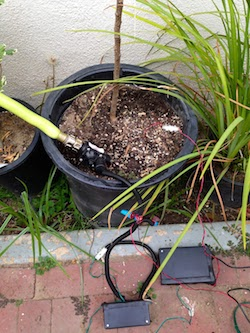

|
dorkbot->Dorkbot SoCal MAIN | LISTS | LINKS | PAST |
________ _______ ________ ______ __________ _______ ________
___ __ \__ __ \___ __ \___ //_/___ __ )__ __ \___ __/
__ / / /_ / / /__ /_/ /__ ,< __ __ |_ / / /__ /
_ /_/ / / /_/ / _ _, _/ _ /| | _ /_/ / / /_/ / _ /
/_____/ \____/ /_/ |_| /_/ |_| /_____/ \____/ /_/
_______________ ________________ ______
LOS ANGELES __ ___/__ __ \__ ____/___ |___ /
PASADENA _____ \ _ / / /_ / __ /| |__ /
ORANGE COUNTY ____/ / / /_/ / / /___ _ ___ |_ /___
SAN DIEGO /____/ \____/ \____/ /_/ |_|/_____/
people doing strange things with electricity, mostly in Los Angeles
_ ___ _ _ ___
|\ | |_ \/ | |_ \ / |_ |\ | |
| \| |_ /\ | |_ \/ |_ | \| |
Dorkbot SoCal 57***** Sunday, December 7, 2014***** 12:00 noon to 2:00pm ***** Machine Project ***** 1200 D North Alvarado Street ***** Los Angeles, CA 90026 ***** Google map of Machine Project Speakers will include... Brian Goeltzenleuchter http://www.bgprojects.com Scenting the antiseptic institution For over eight years Brian Goeltzenleuchter has designed olfactory-based art installations which disseminate scent in one of the most antiseptic of institutions, the art museum. While designing evocative smells might appear to be the olfactory artist's primary creative challenge, Brian's presentation will point to another challenge that is often overlooked for its technical and creative potential: The device itself used to transmit the scent. Using as case studies four recent art projects, Brian's Dorkbot presentation will consider a variety of scent distribution devices - from lower tech to higher tech - and offer technical, poetic and conceptual justification for his choice of each. The presentation will conclude with a description of a forthcoming project, and a challenge to the audience to identify solutions to the challenges it poses in distributing scent. Soyoung Shin http://soyoungshin.com Soyoung lives in Los Angeles, California, USA. She graduated in 2011 from the University of Washington with a Bachelors of Science in Computer Science. She has a post-disciplinary practice that includes sculpture, performance, video, photography, and technology. Soyoung enjoys the intersection of media and science, and her work uses new technologies to create connections between viewers and ideas. Using found advertisements and a readymade discount robotic teddy bear, "THE 50% OFF BALLET" calls attention toward underlying attitudes which frame Valentine's Day. This piece places the viewer in a position where they are provided messaging from media ranging from musical typical of the holiday, to what could be considered perverse. Brian Matthews http://www.flappingsprocket.com Since engineer/artist Brian Matthews made his first pair of mechanical wings in 1998, wing making became his passion. He has made 17 pairs of wings varying in materials and operation from simple pulley opening to pneumatics and robotic control. Most recently, he built a robotic "extra hand", and a 3D printed robotic parrot called "Pollymer". 

Adam Florin http://loommakesmusic.com/ Adam will present a software system for creating generative music called Loom. Loom produces music by using random number generation to distort its internal model of musical "gesture". The project came out of his research and practice at CalArts. Dorkbot SoCal 56 - The Reboot***** Sunday, October 19, 2014***** 11:00 am to 1:00pm ***** Machine Project ***** 1200 D North Alvarado Street ***** Los Angeles, CA 90026 ***** Google map of Machine Project Speakers will include... Garnet Hertz http://www.conceptlab.com Dorkbot SoCal's overlord emeritus has moved to Vancouver, but will return to us through the power of videoconferencing to narrate his travelogue of the Chinese maker/hacker culture including the 2014 Shenzhen Maker Faire, Seeed Studio, the Chaihuo Hackerspace in Shenzhen, as well as the Xin Che Jian Hackerspace in Shanghai. Garnet is now the Canada Research Chair in Design and Media Arts at Emily Carr University of Art + Design in Vancouver Canada, and previously was previously Artist in Residence and Research Scientist in Informatics at UC Irvine. And he has built robots controlled by cockroaches :) Matt Pinner & Kyle Cothern https://www.suprmasv.com/projects/156/led-staff-for-spinning-crowd-con Matt & Kyle have created an awesome 8ft long carbon fiber staff stuffed to the gills with RGB LEDs that produce a bright flow of energy circling around the user. Thomas Edwards http://www.t11s.com Thomas will talk about how you can use 3D capture software such as 123D Catch to make your own digital holograms with Zebra Imaging. 
Jennifer Fox http://www.jenfoxbot.blogspot.com Conserving freshwater is one of those seemingly constant struggles, especially with a human population exceeding seven billion. There are many ways to optimize irrigation systems and reduce water consumption; one of these ways is to install a soil moisture sensor. Jennifer will describe how to build a Raspberry Pi Soil Moisture Sensor.  Previous Events...Dorkbot SoCal 55***** Sunday, November 10, 2013***** 1:00 pm to 3:00pm ***** LA Biohackers Lab ***** 6th Floor, ETO Building ***** 1340 E 6th Street, Los Angeles, CA, 90013  Come meet the LA Biohackers and find out more about some of the biotech projects going on in their lab! Speakers to include... Keoni Gandall Keoni will be talking about how he is bootstrapping a synthetic bacteria using the common laboratory bacteria Bacillus subtilus. Currently there is no easy method for creating a new organism even if you have the ability to synthesize a new genome from scratch. A method Keoni is working on allows for a new genome to first be integrated into a host genome, then split off during cell division to create two daughter cells - 1 with the host genome and 1 with the new genome. This method will have great use in synthetic biology. Sophia Hewitt Sophia will be talking about her research on using epigallocatechin-3-gallate (EGCG), a compound found in green tea as an anti-tumor treatment. In some types of cancer the cancer cells repair their telomeres so the cells effectively don't age, allowing the tumor to grow perpetually. Sophia is testing whether EGCG can inhibit this telomere repair mechanism and allow for treated cells to age. She is usingthe model organism called Tetrahymena thermophila which is an excellent test bed for studies on telomere length. Cory Tobin Cory will be talking about his work on creating plants that make their own fertilizer. He is studying an extremophile bacteria that makes it's own ammonia (fertilizer) using water and nitrogen gas from the atmosphere. By understanding the mechanism this bacteria uses, he hopes to create plants and algae capable of synthesizing their own ammonia, negating the need to apply fertilizer to the soil. 
Dorkbot SoCal 54***** Sunday, September 8, 2013***** 1:00pm to 3:00pm ***** LA Makerspace ***** 1933 S. Broadway ***** Suite 1138 ***** Los Angeles, CA 90007 ***** (Directions) ***** No cover charge / donations to venue welcome Visit LA Markerspace and find out more about the exciting projects and classes going on there! 
Phillip Dupree's hexapod robot: 
Dorkbot SoCal 53***** Sunday, June 9, 2013***** 1:00pm to 3:00pm ***** Crash Space ***** 10526 Venice Blvd. ***** Culver City, CA 90232 ***** (Directions) ***** No cover charge / donations to venue welcome Come to Crash Space and learn about the hackersapce and some of their exciting projects: Flipbookit Mechanical animation kit. Crash Library Arudino-powered outdoor mini-library that tweets when people take out a book. 
Crash Inspired Mobile interactive night club experience - 2K RGB LEDs - on a truck - controlled with Twitter! 
Introducing the launch of Dorkbot SoCal's 2013 Hackerspace Tour - your chance to get inside Southern California's most exciting hackerspaces. Dorkbot SoCal 52***** Sunday, May 5, 2013 ***** 1:00pm to 3:00pm ***** Droplabs ***** 651 Clover St. ***** Los Angeles, CA 90031 ***** (Directions) ***** No cover charge / donations to venue welcome Droplabs is a collaborative coworking space, classroom and makerspace near Downtown Los Angeles. Come see a presentation about their 3D avatar engine / web service, a classroom / coworking management system, and more! Photos of the event: http://www.flickr.com/photos/youraccount/sets/72157633419283609/ Video of the event by Douglas Welch: Dorkbot SoCal 51***** Saturday, January 26, 2013***** 3:00pm-5:00pm ***** The Public School ***** 951 Chung King Road ***** Los Angeles, CA 90012 ***** Google map of The Public School Dorkbot SoCal will host a presentation by artists participating in "Poetic Codings", an exhibition that explores the relationship between art and technology through juxtaposing code-based works for the wall with those made for mobile devices. John Carpenter http://www.johnbcarpenter.com/ John Carpenter is a Los Angeles-based, interactive digital artist and designer. He will be creating a new interactive work for this exhibition that continues his explorations of natural systems and complex data and spaces. 
Erik Loyer http://www.erikloyer.com/ Erik Loyer uses tactile and performative interfaces to tell stories with interactive media. His award-winning website The Lair of the Marrow Monkey was one of the first to be added to the permanent collection of a major art museum, and his serialized web narrative Chroma went on to win the Best Digital Creation award at the Montreal International Festival of New Cinema and New Media. 
Casey Reas http://reas.com/ Los Angeles-based Casey Reas' generative software pieces undulate and transform indefinitely. As the code moves through the stages of the algorithms, and shapes colors criss-cross on the screen creating overlapping patterns. For "Poetic Codings" Reas will present a new monitor-based work. 
Jody Zellen http://www.jodyzellen.com/ Jody Zellen is an artist living in Los Angeles, California. She works in many media simultaneously making photographs, installations, net art, public art, as well as artists' books that explore the subject of the urban environment. She employs media-generated representations of contemporary and historic cities as raw material for aesthetic and social investigations. 
___
\ / |_| /\ |
\/\/ | | /--\ |
Dorkbot SoCal is a monthly meeting of artists
(sound/image/movement/whatever), designers, engineers,
students and other interested parties from the Los Angeles / Southern California area
who
are involved in the creation of electronic art (in the broadest sense of
the
term.)
The purpose of Dorkbot SoCal is to:
Imaginary presentation topics:
Dorkbot SoCal meetings are free and open to the public. Space at some events may be limited, so you are encouraged to come a bit early.
You can also see photos of some past events on Flickr. Here are recent photos tagged with "dorkbotsocal", and here are some interesting ones. Some sets of specific events are also at Flickr: Dorkbot SoCal 15 (July 2006), Dorkbot SoCal 09 (May 2006), Dorkbot SoCal 08 (Dec 2005), Dorkbot SoCal 06 (Dec 2004), Dorkbot SoCal 05 (Nov 2004), Dorkbot SoCal 02 (June 2004), and Dorkbot SoCal 00 (April 2004).
_
\ / |_| / \
\/\/ | | \_/
Dorkbot SoCal meetings have been hosted in several different
locations around the Southern California area, but are currently being held in Los Angeles (Echo Park) for the next while. They are coordinated by Thomas Edwards.
_
\ / |_| |_ |\ |
\/\/ | | |_ | \|
Dorkot SoCal meetings occur at least every other month. There is no "fixed schedule", but they tend to be at 1PM on Saturdays or Sundays.The dorkbotsocal-announce mailing list is used to send out meeting announcement reminders and other pertinent information. Please subscribe to the list if you'd like to receive such information. In addition to this, you can also subscribe to the "blabber" list, in which we discuss new ideas, where to get gear, other related local events, and all sorts of other stuff. If you want to keep in touch with what is going on, you're encouraged to subscribe to both. There is also a Facebook group for Dorkbot SoCal.
_ _ _
\ / |_| |_ |_) |_
\/\/ | | |_ | \ |_
Dorkbot SoCal meetings have taken place in different locations around
Southern California. Currently, we're going to be meeting at Machine Project gallery in Echo Park (Los Angeles) for the next while. Meeting locations and directions will be posted at
this website about one week before the event,
http://www.dorkbot.org/dorkbotsocal/
_
|_| / \ \ /
| | \_/ \/\/
To attend a Dorkbot SoCal meeting, just show up
and hope there's room. To give a presentation at a meeting please email
Thomas at dorkbotsocal *-at-* dorkbot *-dot-* org. please see below for
details on giving presentations.
_ _ _ ___ |_ / \ |_) |\/| /\ | | \_/ | \ | | /--\ |Dorkbot SoCal meetings are largely informal, but to save everyone time and energy a certain amount of planning will go into each meeting. The current structure for presentation/demo events is:
In other words, each meeting is about 2 hours long and features three presentations.
On the other hand, "open hack" events will be more free-form:
just bring your stuff, work on it (or show it) and get feedback. _ _ __ _ _ _ _ __ |_) |_ (_ / \ | | |_) / |_ (_ | \ |_ __) \_/ |_| | \ \_ |_ __)You are encouraged to provide most of the resources needed for your presentation. However, some equipment may be available for your use. Please be prepared to give your presentation with only the resources you bring with you. Available resources may - by some chance - include:
_ _ __ ___ ___ _ __ / \ | | |_ (_ | | / \ |\ | (_ \_X |_| |_ __) | _|_ \_/ | \| __)
Q: I want to present something at Dorkbot SoCal. is my project
appropriate? what styles/genres/scenes does Dorkbot SoCal
represent?
Q: What if I just want an audience for my new piece?
Q: I make cold, hard, intense, machine-robot-skull-hammer music, and am
bent on the annihilation of the human species. Can I participate in
Dorkbot SoCal meetings?
Q: I do soft, warm, dreamy, auto-electrolysis live performance video and
founded a local PETA chapter. Can I participate in Dorkbot SoCal
meetings?
Q: Do I have to join something to participate in Dorkbot SoCal?
Q: Why are Dorkbot SoCal meetings on the one day in the month i'm
busy?
Q: Well can you change the date? How about the first Tuesday of the month?
Q: is Dorkbot SoCal run by a university?
Q: Dorkbot is a stupid name.
FOR MORE INFO ON DORKBOTSOCAL, CONTACT THOMAS EDWARDS AT dorkbotsocal *-at-* dorkbot *-dot-* org |
www.flickr.com
|